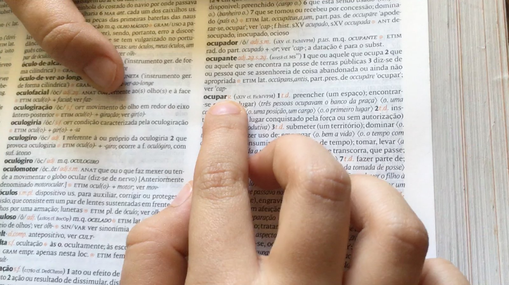
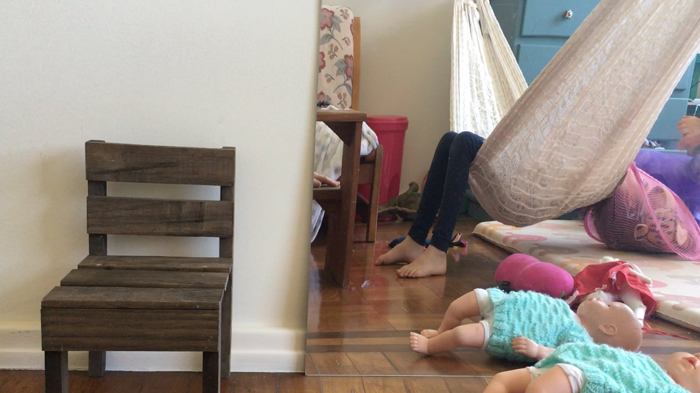
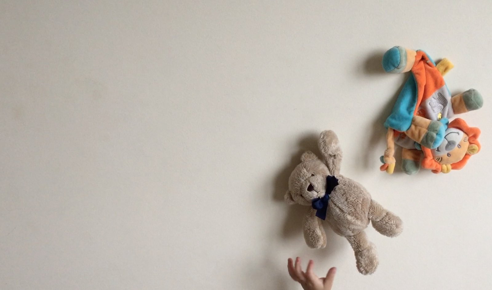

a insurreição e o desprezo pelo vazio – por uma poética da ocupação que vem (the uprising and the contempt for the empty – for a poetics of the occupation that is coming)
a insurreição e o desprezo pelo vazio – por uma poética da ocupação que vem
(the uprising and the contempt for the empty – for a poetics of the occupation that is coming)
2016
video, 8’28”
um ensaio audiovisual sobre ocupação, corpo e maternidade
(an audiovisual essay on occupation, body and motherhood)


